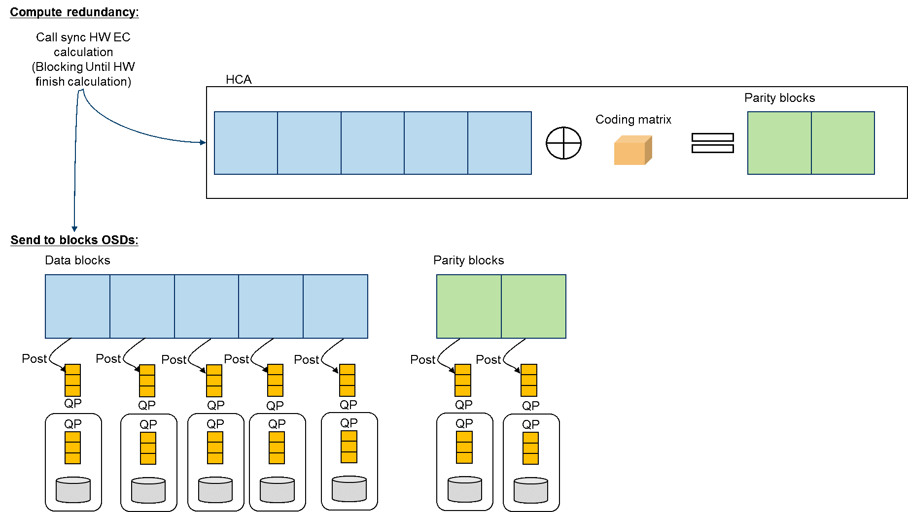
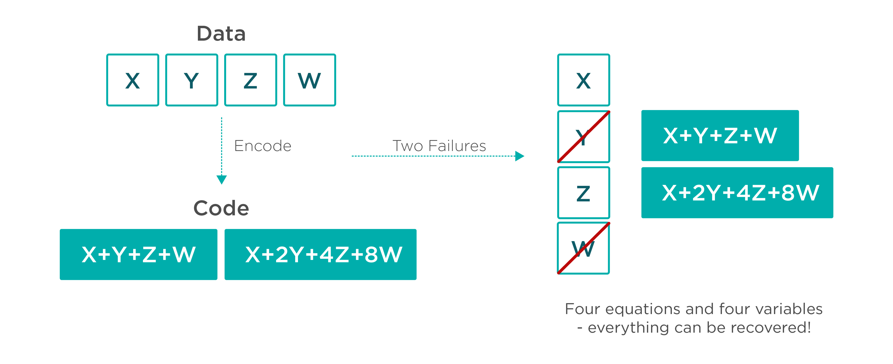

Checkpointing
Recuperação & Checkpoint
Assumindo que o modelo de consistência implementado é satisfatório, temos que garantir que este modelo não será quebrado na presença de falhas. Isto é, suponha que uma série de erros aconteceram no sistema, e que não é possível continuar o processamento em algum ou todos os módulos do sistema. Neste cenário, o sistema precisa agir para ou avançar para um novo estado, livre de erros, ou retroceder a um estado anterior, correto.
Voltar a um estado correto parece ser a solução mais fácil, mas pare isto é preciso garantir a informação sobre estados anteriores seja recuperável.
Log Recuperável
Replicação
Como garantir que o log poderá ser lido para recuperar o processo?

- Dois discos iguais?
- Dados diferentes, mas ambos bons?
- Um bom outro estragado?
- Ambos estragados?
Blocos de paridade
Erasure Coding
Blocos de paridade

Cálculo da paridade

Recuperação de blocos perdidos

Estado global consistente
Um estado global, o conjunto com um estado local de cada processo no sistema e também são conhecidos como ou snapshots.

Para serem úteis, snapshots precisam formar Estado Globais Consistentes, que são estados globais tal que toda mensagem recebida no estado local de um processo também precisa fazer parte do estado local do processo remetente.
O mais recente estado global consistente forma uma linha de recuperação.
Linhas de Recuperação podem ser usados para, não surpreendentemente, recuperação do sistema, mas também para coleta de lixo (remover objetos não referenciados em nenhum outro processo), detecção de deadlocks e depuração (pausar o sistema).
Se o sistema provê comunicação confiável, então toda mensagem enviada no estado local de um processo também precisa fazer parte do estado local do destinatário, ou o estado global precisa capturar o estado dos canais de comunicação.
Checkpointing independente
Cada processo faz o checkpoint local independentemente, incorrendo no risco de um rollback em cascata.
- Seja \(C_i^m\) o \(m\)-ésimo checkpoint do processo \(p_i\).
- Seja \(I_i^m\) o intervalo entre \(C_i^{m-1}\) e \(C_i^m\).
- Quando o processo \(p_i\) envia a mensagem no intervalo \(I_i^m\), envia \((i,m)\) em piggyback
- Quando o processo \(p_j\) recebe a mensagem no intervalo \(I_j^n\), grava a dependência \(I_i^m \rightarrow I_j^n\)
-
A dependência \(I_i^m \rightarrow I_j^n\) é salva junto com o checkpoint \(C_j^n\)
-
Se o processo \(p_j\) é revertido para o estado \(C_j^n\), então o \(p_i\) não pode reverter para nenhum estado anterior a \(C_i^m\), ou não teria enviado as mensagens recebidas por \(p_j\) 4 inclusas em \(C_j^n\).
ou
- Se o processo \(p_i\) é revertido para o estado \(C_i^{m-1}\), então o \(p_j\) tem que ser revertido pelo menos até \(C_j^{n-1}\), ou incluiria mensagens ainda não enviadas por \(p_i\).
Como implementar a recuperação?
# Caso patológico
- \(p_i\) e \(p_j\) no estado inicial (\(C_i^0, C_j^0\))
- \(p_i\) manda mensagens para \(p_j\) (\(C_i^1 \rightarrow C_j^1\))
- \(C_j^1\)
- \(p_j\) manda mensagens para \(p_i\) \(C_j^2 \rightarrow C_i^1\)
- \(C_i^1\)
- \(p_i\) manda mensagens para \(p_j\) \(C_i^2 \rightarrow C_j^2\)
- \(C_j^2\)
- \(p_j\) manda mensagens para \(p_i\) \(C_j^3 \rightarrow C_i^2\)
- \(C_i^2\)
- ...
Se estados locais são capturados na "hora errada", a linha de recuperação pode ser o estado inicial, fazendo um rollback em cascata*

Checkpointing coordenado
Processos se coordenam por troca de mensagem para executar checkpointing "simultaneamente".
Bloqueio em duas fases
- Um coordenador faz multicast da mensagem "checkpoint-request"
- Quando um participante recebe "checkpoint-request"
- faz um checkpoint local
- para de mandar mensagens da aplicação
- responde com "checkpoint-taken"
- Quando "checkpoint-taken" recebido de todos os participantes, multicast "checkpoint-done"
- Quando receber "checkpoint-done", retoma computação normal
- Por quê funciona? Impede formação de dependências circulares.
- Todos os processos precisam participar? Somente os que dependem da recuperação do coordenador.
Pontos negativos?
- Se o coordenador falha, outros processos ficam bloqueados?
- Timeout!
- Como eleger outro coordenador?
- E se dois aparecerem juntos?
- Pode ser resolvido com um protocolo de eleição como o do RAFT.
- Não é garantido, mas aumenta as chances de sucesso.
Chandy-Lamport
- Não interfere na aplicação
-
Cada processo grava snapshot independentemente
-
Observador (iniciador do snapshot)
- Salva o próprio estado
- Envia uma mensagem "snapshot" aos outros processos em cada canal de saída
- Grava as mensagens chegando em cada canal até que receba uma mensagem "snapshot" naquele canal.
-
Um processo \(p\) que receba "snapshot" de um processo \(q\)
- grava estado local \(S_p\)
- grava estado do canal \(C_{q,p} =\emptyset\)
- Envia uma mensagem "snapshot" aos outros processos em cada canal de saída
- Grava as mensagens chegando em cada canal até que receba uma mensagem "snapshot" naquele canal (excluindo \(C_{q,p}\))
-
Protocolo termina para o processo \(p\) quando tiver recebido marcador "snapshot" em cada um de seus canais.
- O estado global consiste dos snapshots + estado em cada um dos canais.
- Exige canais FIFO
Message Logging
Em vez de checkpoints frequentes, crie um log da comunicação e o re-execute a partir do último checkpoint.
Ideia básica:
A computação é determinada pela troca de mensagens (eventos não determinísticos). Ao se enviar a mesma mensagem a partir de um certo estado, a computação desencadeada é sempre a mesma.
Realista este modelo? Há outros eventos não determinísticos no sistema?

-
\(Hdr(m)\)
- Cabeçalho da mensagem \(m\) contendo fonte, destino, número de sequência e número de entrega.
- O cabeçalho contém a informação necessária para reenviar e re-receber a mensagem na ordem certa (dados devem ser reproduzidos para aplicação).
- A mensagem \(m\) é estável se \(Hdr(m)\) estiver em memória estável.
-
\(Dep(m)\): o conjunto de processos a quem \(m\) ou mensagens que dependem de \(m\) foram entregues.
- \(Copy(m)\): o conjunto de processos que tem uma cópia de \(Hdr(m)\) em memória volátil.
Se \(C\) é um conjunto de processos falhos, então \(Q\not\in C\) é um órfão se existe uma mensagem \(m\) tal que \(Q \in Dep(m)\) e \(Copy(m)\subseteq C\)
Se os processos em \(C\) forem reiniciados, então a computação seguirá um caminho possivelmente distinto do que levou \(Q\) a receber \(m\) ou um mensagem causalmente dependente de \(m\).
Para cada mensagem \(m\) não estável, há no máximo um processo dependente em \(m\) (\(Dep(m) \leq 1\))
Uma mensagem não estável, no protocolo pessimista, deve ser estabilizada antes do envio da próxima mensagem.
Toda mensagem é precedida por uma escrita em disco.
Para cada mensagem \(m\) não estável, então devemos garantir que se \(Copy(m) \subseteq C\), então eventually \(Dep(m) \subseteq C\), onde \(C\) é o conjunto de processos que falharam.
Para garantir que \(Dep(m) \subseteq C\), fazemos um rollback de cada órfão \(Q\) até que \(Q \not\in Dep(m)\)
Isto é, forçamos \(Q\) a ser recuperado mesmo que não tenha falhado.